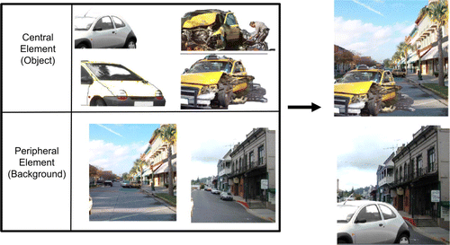
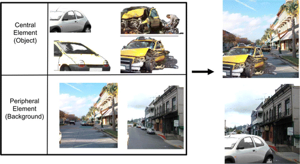
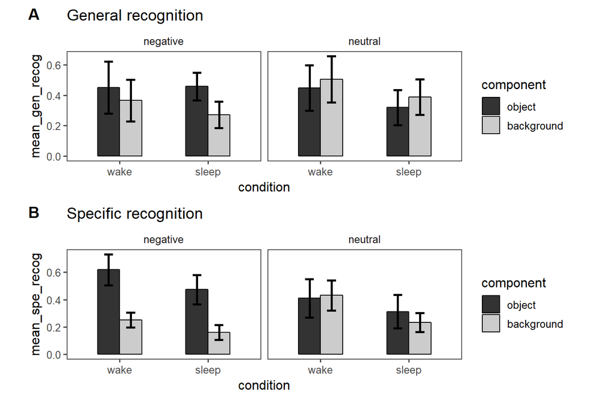
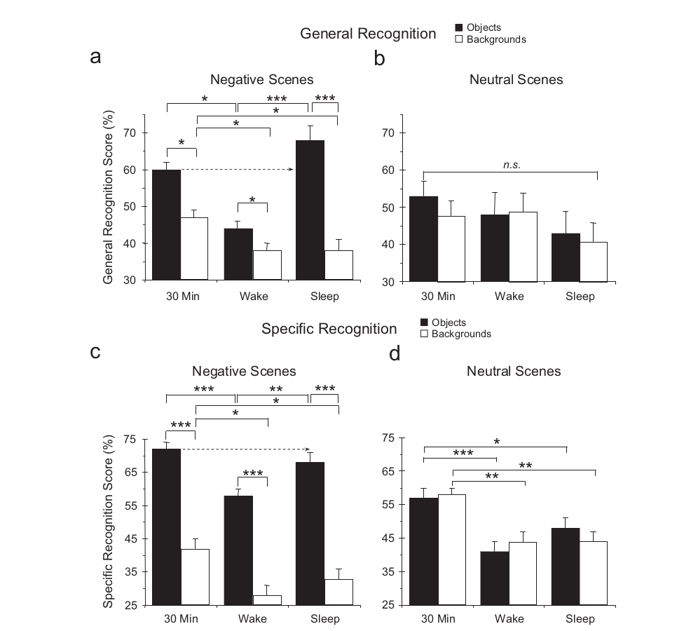
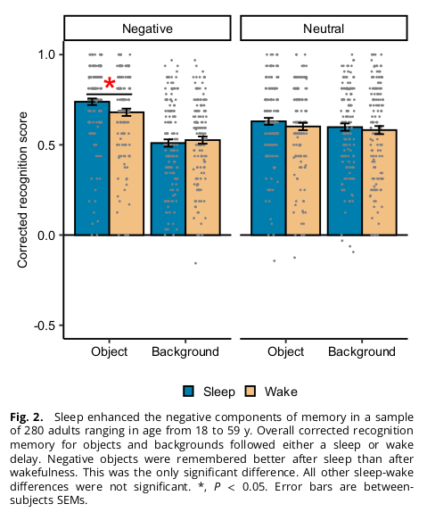

knitr::include_graphics("fig1.webp")
Links to github repo, osf preregistration, and the original paper
Based on the prior write-up, describe any differences between the original and 1st replication in terms of methods, sample, sample size, and analysis. Note any potential problems such as exclusion rates, noisy data, or issues with analysis.
The first replication project differed from the original in that it recruited online crowd workers (MTurk), whereas the participants from the original study were college students at Harvard and Boston College. The replication project experiments were also run online, whereas the original experiment was done in person, in a lab.
In the original experiment, participants were randomly assigned to one of two possible conditions (one in which they would view a set of stimuli after sleeping and the other after 12 hours awake). In the replication, participants were allowed to self-select which condition they would be in. This presents a strong chance of selection bias, and also reduces our opportunity to make causal inferences from the results.
The replication attempted to recruit 48 participants, but only ended up being able to include 23 participants in the final analysis due to so many of them dropping out. The original study recruited 88 participants.
How much power does your planned sample have for original effect? For an attenua
Planned sample size and/or termination rule, sampling frame, known demographics if any, preselection rules if any.
I plan to recruit 110 participants using prolific. Seeing as this is a rescue attempt of a replication that may have failed largely due to a small sample size, I think it makes sense to plan for a sufficiently large sample. The original study recruited 88 participants so I chose 110 partly to recruit more particiapnts than they did, but also due to financial constraints and to keep the total cost of this experiment to around $350.
Participants who complete neither or only one of the two required experiment conditions will be removed from any analyses.
In the replication project, 91.3% of the sample had finished or attended college, so I will attempt to collect a sample that is more diverse in SES.
All materials - can quote directly from original article - just put the text in quotations and note that this was followed precisely. Or, quote directly and just point out exceptions to what was described in the original article.
“The scenes portrayed negative arousing or neutral objects placed on plausible neutral backgrounds. For each of 64 scenes (e.g., a car on a street), we created eight different versions by placing each of two similar neutral objects (e.g., two images of a car) and each of two related negative objects (e.g., two images of a car accident) on each of two plausible neutral backgrounds (e.g., two images of a street). An additional 32 scenes served as lures on a recognition memory test (Fig. 1). Participants in a previous study had rated the objects and backgrounds for valence and arousal, using 7-point scales (Kensinger, Garoff-Eaton, & Schacter, 2006). All negative objects had received arousal ratings of 5 to 7 (with high scores signifying an exciting or arousing image) and valence ratings lower than 3 (with low scores signifying a negative image). All neutral items (objects and backgrounds) had been rated as nonarousing (arousal values lower than 4) and neutral (valence ratings between 3 and 5).”
This will be followed precisely.
Fig. 1. “Examples of the scenes presented to subjects. Eight versions of each scene were created by combining each of four similar objects (two neutral objects, two negative and arousing emotional objects) with each of two plausible neutral backgrounds. In this example, the two neutral central objects are cars, and the two negative central objects are cars damaged in an accident; the neutral backgrounds are street scenes. Two of the eight versions of the completed scene are shown.”]
knitr::include_graphics("fig1.webp")
Can quote directly from original article - just put the text in quotations and note that this was followed precisely. Or, quote directly and just point out exceptions to what was described in the original article.
“Participants studied a set of 64 scenes (32 with a neutral object and 32 with a negative object, all on neutral backgrounds) for 5 s each, and then indicated on a 7-point scale whether they would approach or move away from the scene if they encountered it in real life. This task was used to maximize memory encoding.
After the delay period, participants performed an unexpected, self-paced recognition task. During this task, objects and backgrounds were presented separately and one at a time. Some of these objects and backgrounds were identical to the scene components that had been studied (e.g., the same car accident), others were the alternate version of the object or background and therefore shared the same verbal label but differed in specific visual details (e.g., a similar car accident), and others were objects or backgrounds that had not been studied (new). Participants never saw both the same and the similar version of an item at test. Each object or background was presented with a question (e.g., “Did you see a monkey?”). If the answer to the question was “yes,” participants pressed one button to indicate that the object or background was an exact match to a studied component (“same”) or a second button to indicate that it was not an exact match (“similar”). If the answer to the question was “no,” they pressed a third button.”
The recognition task includes 32 same objects (16 negative, 16 neutral), 32 similar objects (16 negative, 16 neutral), 32 new objects (16 negative, 16 neutral), 32 same backgrounds (16 previously shown with a negative object, 16 previously shown with a neutral object), 32 similar backgrounds (16 previously shown with a negative object, 16 previously shown with a neutral object), and 32 new backgrounds.”
This will be followed precisely. For the replication project, the experiment sessions before and after the delay period will be referred to as Session 1 and Session 2 respectively. I will also do this for my rescue attempt.
What attention checks, positive or negative controls, or other quality control measures are you adding so that a (positive or negative) result will be more interpretable?
Neither the original study, nor the replication controlled for sleep quality and number of hours slept, but I think it would be useful to control for this in the rescue attempt.
I also think it might be useful to periodically check with participants whether they actually find some of the stimuli to be negatively or neutrally arousing, which was the intention of the creators of the stimuli. After looking through the images that make up the stimulus set, whilst some of them may induce negative affect, some seemed too unrealistic to induce negative affect, or just seemed like they would stand out as being strange rather than negative (potentially due to appearing poorly photoshopped). This might need to be done with a separate set of participants in a different experiment.
Can also quote directly, though it is less often spelled out effectively for an analysis strategy section. The key is to report an analysis strategy that is as close to the original - data cleaning rules, data exclusion rules, covariates, etc. - as possible.
Clarify key analysis of interest here You can also pre-specify additional analyses you plan to do.
“We scored a response as specific recognition of visual details when a subject correctly responded”same” to a same item, but as general recognition without specific details when a subject responded “similar” to a same item. Because “similar” responses were constrained by the number of “same” responses (i.e., subjects responded “similar” only when they did not remember the visual details), we computed the general recognition score as the proportion of “similar” responses after exclusion of “same” responses (similar/[1- same]).” “Specific and general recognition scores were computed separately for central objects (negative or neutral) and for the peripheral neutral backgrounds (studied with either a negative or a neutral object).”
I will follow the replication, which planned to perform a 2 (condition: sleep, wake) x 2 (valence: negative, neutral) x 2 (scene component: object, background) mixed ANOVA. As well as a follow-up 2 (condition: sleep, wake) x 2 (valence: negative, neutral) mixed ANOVA applied on the recognition of objects and backgrounds separately.
Time and funds permitting, I also plan to do additional analyses double checking the valence ratings of the stimulus, as well as whether sleep quality (low, medium, high) has any potential interaction effect.
The term of interest is the three-way interaction (Condition x Valence x Scene Component). The original study found that negative, but not neutral stimuli were better remembered after sleep than wake. The original replaction did not find this result.
Explicitly describe known differences in sample, setting, procedure, and analysis plan from original study. The goal, of course, is to minimize those differences, but differences will inevitably occur. Also, note whether such differences are anticipated to make a difference based on claims in the original article or subsequent published research on the conditions for obtaining the effect.
Key Differences
- I aim to recruit a sample greater than that of the original study (n = 88) and the first replication (n = 23) - I intend to recruit a sample diverse in SES - Participants will be randomly assigned to one of the two conditions (sleep or wake), rather than assigning themselves to a condition - The original study was done in-person, and replication was done online using Mturk workers. I will do my rescue online using prolific workers - I plan to run a smaller parallel study confirming the valence ratings of the stimuli by the original authors - I plan to ask participants in all conditions about their sleep quality the previous night when they complete the second of the two experimental sessions - I plan to include sleep quality in an additional mixed ANOVA. This may result in a slight change to the original claims of the article, which were that sleep preferentially enhances memory for emotional components of scenes. A novel result for this control would result in a new claim: Depending on sleep quality, sleep preferentially enhances memory for emotional components of scenes
I was only able to collect data from 24 participants (one had to be excluded as they failed to wait 12 hours between completing session 1 and session 2). The sample was much smaller than expected due to diffculties getting participants to successfully complete both sessions 12 hours apart. A large number of participants (over 700) discontinued the first survey once they realised they would need to complete a second survey.
In reality, this rescue attempt did not fare any better than the original 251 replication attempt which also only recruited 23 participants.
Any differences from what was described as the original plan, or “none”.
Due to existing difficulties with participant recruitment, full-random assignment would have not been feasible. However, to still keep some level of random assignment, unlike the first replication, it seemed that surveys being completed very quickly after being published on prolific acted like quasi-random assignment. All that needed to be done was to publish a survey to half the expected participants in the morning, and then publish an identical survey in the evening only available to another half of the expected number of participants. Ultimately, we ended up with 15 participants in the wake group, and 8 in the sleep group.
Data preparation following the analysis plan.
data_s1s2 <- read_csv("../data/payne_data_de_id.csv")New names:
Rows: 25 Columns: 293
── Column specification
──────────────────────────────────────────────────────── Delimiter: "," chr
(275): DistributionChannel, UserLanguage, 1_s2_q1, 2_s2_q1, 3_s2_q1, 4_... dbl
(7): ...1, Progress, Duration (in seconds), age, s1_Progress, s1_Dura... lgl
(3): Finished, ExternalReference, s1_Finished dttm (6): StartDate, EndDate,
RecordedDate, s1_StartDate, s1_EndDate, s1_R... time (2): current_time,
s1_current_time
ℹ Use `spec()` to retrieve the full column specification for this data. ℹ
Specify the column types or set `show_col_types = FALSE` to quiet this message.
• `` -> `...1`
• `s1_check_hours...359` -> `s1_check_hours...287`
• `s1_check_time...360` -> `s1_check_time...288`
• `s1_check_hours...362` -> `s1_check_hours...290`
• `s1_check_time...363` -> `s1_check_time...291`# join s1 and s2 data
#data_s1s2 <- left_join(data_s2_clean, data_s1_clean, by = c("ID" = "s1_ID"))
# calculate the s1-s2 time gap
data_s1s2 = data_s1s2 %>%
mutate(int = interval(start = s1_StartDate, end = StartDate)) %>%
mutate(time_gap_seconds = int_length(int)) %>%
mutate(time_gap_minutes = minute(seconds_to_period(time_gap_seconds))) %>%
mutate(time_gap_hours = hour(seconds_to_period(time_gap_seconds))) %>%
select(-(int))
# Filter out participants who did session 2 as soon as they did session 1
data_s1s2 = data_s1s2 %>%
filter(time_gap_hours > 1)
# Filter out pilot participants. Pilot ended 11/28/2023
data_s1s2 = data_s1s2 %>%
filter(StartDate > "2023-11-29")
table(data_s1s2$condition, data_s1s2$s1_am_or_pm)
evening morning
sleep 8 0
wake 0 15# distribution of S2 time of the day
ggplot(data_s1s2, aes(x = hour(StartDate), fill = condition))+
geom_histogram(color = 'black') +
labs(title = "Distribution of the time of Session 2 (in Pacific Time)", x = "Time of the day (hour)")+
xlim(0, 24) + scale_y_continuous(breaks=seq(0, 10, 1))`stat_bin()` using `bins = 30`. Pick better value with `binwidth`.Warning: Removed 4 rows containing missing values or values outside the scale range
(`geom_bar()`).
# distribution of the time gap between S1 and S2
ggplot(data_s1s2, aes(x = time_gap_hours))+
geom_histogram(color = 'black', fill = 'white') +
labs(title = "Distribution of time gap between Session 1 and Session 2", x = "duration (hours)")+
xlim(-1, 14)`stat_bin()` using `bins = 30`. Pick better value with `binwidth`.Warning: Removed 2 rows containing missing values or values outside the scale range
(`geom_bar()`).
#### Prepare data for analysis - create columns etc.
# temp1: data with Q1 gathered (Q1: did you see this object/background?)
data <- data_s1s2 %>%
gather(item, s2_q1, contains("s2_q1")) %>%
mutate(item = substr(item, 1, str_length(item)-3))
# create item_number and rearrange the dataframe
data <- data %>%
mutate(item_number = as.numeric(str_sub(item, 1, str_length(item)-3))) %>%
rename(code_s1=`...1`) # guessing this is some per-user thing?
#arrange(code_s1, item_number)
# read in the stimuli list csv
item_list <- read_csv('questions_list.csv')Rows: 192 Columns: 6
── Column specification ────────────────────────────────────────────────────────
Delimiter: ","
chr (5): item_filname, item_link, component, valence, type
dbl (1): item_number
ℹ Use `spec()` to retrieve the full column specification for this data.
ℹ Specify the column types or set `show_col_types = FALSE` to quiet this message.# merge the item list to the data frame
data_joined <- left_join(data, item_list, by = "item_number")
# rearrange
data_joined <- data_joined %>% arrange(code_s1, item_number)
## summarize into individual-wise data
data_ind <- data_joined %>%
group_by(code_s1, condition, type, component, valence, s2_q1) %>%
mutate(count_ans = n()) #the number of all answers separately (same, similar, new)
data_ind <- data_ind %>%
group_by(code_s1, condition, type, component, valence) %>%
mutate(count_all = n()) #the number of questions
# collapse to individual level
data_ind <- data_ind %>%
group_by(code_s1, condition, type, component, valence, s2_q1) %>%
summarise(count_ans = mean(count_ans, na.rm = T),
count_all = mean(count_all, na.rm = T)) %>%
spread(s2_q1, count_ans) #spread s2_q1`summarise()` has grouped output by 'code_s1', 'condition', 'type',
'component', 'valence'. You can override using the `.groups` argument.#replace na with 0
data_ind[is.na(data_ind)] <- 0
#calculate specific and general recognition rate
data_ind <- data_ind %>%
mutate(specific_recog = Identical/count_all, #specific recognition
general_recog = Similar/(count_all-Identical) #general recognition
)
# order the level of condition
data_ind$condition <- factor(data_ind$condition, levels=c('wake', 'sleep'), ordered=TRUE)
data_ind$component <- factor(data_ind$component, levels=c('object', 'background'), ordered=TRUE)
# show the head of the individual-wise data
kable(head(data_ind, 11), digit = 2)| code_s1 | condition | type | component | valence | count_all | Identical | New | Similar | specific_recog | general_recog |
|---|---|---|---|---|---|---|---|---|---|---|
| 2 | wake | new | background | neutral | 32 | 2 | 15 | 15 | 0.06 | 0.50 |
| 2 | wake | new | object | negative | 16 | 0 | 11 | 5 | 0.00 | 0.31 |
| 2 | wake | new | object | neutral | 16 | 1 | 9 | 6 | 0.06 | 0.40 |
| 2 | wake | same | background | negative | 16 | 3 | 4 | 9 | 0.19 | 0.69 |
| 2 | wake | same | background | neutral | 16 | 7 | 1 | 8 | 0.44 | 0.89 |
| 2 | wake | same | object | negative | 16 | 12 | 1 | 3 | 0.75 | 0.75 |
| 2 | wake | same | object | neutral | 16 | 12 | 1 | 3 | 0.75 | 0.75 |
| 2 | wake | similar | background | negative | 16 | 4 | 2 | 10 | 0.25 | 0.83 |
| 2 | wake | similar | background | neutral | 16 | 5 | 2 | 9 | 0.31 | 0.82 |
| 2 | wake | similar | object | negative | 16 | 6 | 0 | 10 | 0.38 | 1.00 |
| 2 | wake | similar | object | neutral | 16 | 7 | 2 | 7 | 0.44 | 0.78 |
###Confirmatory analysis
## 3-way anova: test on the 3-way interaction
anova_3way = ezANOVA(
data = data_ind %>% filter(type == "same"),
dv = .(general_recog),
wid = .(code_s1),
within = .(component, valence),
between = .(condition)
)Warning: Converting "code_s1" to factor for ANOVA.Warning: Converting "valence" to factor for ANOVA.Warning: Data is unbalanced (unequal N per group). Make sure you specified a
well-considered value for the type argument to ezANOVA().#Show the ANOVA & assumption tests.
print(anova_3way)$ANOVA
Effect DFn DFd F p p<.05 ges
2 condition 1 21 2.94691252 0.10075734 8.144255e-02
3 component 1 21 0.01168321 0.91495127 7.332058e-05
5 valence 1 21 2.20542007 0.15238391 1.631864e-02
4 condition:component 1 21 0.16057804 0.69267266 1.006803e-03
6 condition:valence 1 21 0.09566309 0.76014543 7.190683e-04
7 component:valence 1 21 5.02232797 0.03595824 * 1.840747e-02
8 condition:component:valence 1 21 1.02131666 0.32371020 3.798965e-03## 2-way anova: test on the key 2-way interaction on object recognition
anova_2way_obj = ezANOVA(
data = data_ind %>% filter(type == "same", component == "object"),
dv = .(general_recog),
wid = .(code_s1),
within = .(valence),
between = .(condition)
)Warning: Converting "code_s1" to factor for ANOVA.Warning: Converting "valence" to factor for ANOVA.Warning: Data is unbalanced (unequal N per group). Make sure you specified a
well-considered value for the type argument to ezANOVA().print(anova_2way_obj)$ANOVA
Effect DFn DFd F p p<.05 ges
2 condition 1 21 4.323170357 0.05003924 1.254058e-01
3 valence 1 21 0.006055818 0.93870864 8.751011e-05
4 condition:valence 1 21 0.716974594 0.40668448 1.025535e-02## 2-way anova: test on the 2-way interaction on background
anova_2way_bgd = ezANOVA(
data = data_ind %>% filter(type == "same", component == "background"),
dv = .(general_recog),
wid = .(code_s1),
within = .(valence),
between = .(condition)
)Warning: Converting "code_s1" to factor for ANOVA.Warning: Converting "valence" to factor for ANOVA.Warning: Data is unbalanced (unequal N per group). Make sure you specified a
well-considered value for the type argument to ezANOVA().print(anova_2way_bgd)$ANOVA
Effect DFn DFd F p p<.05 ges
2 condition 1 21 1.4863273 0.23630481 0.0538740958
3 valence 1 21 6.1042983 0.02213371 * 0.0537675810
4 condition:valence 1 21 0.1054559 0.74859089 0.0009806895###Data plots
# summarize data for plotting
data_summary <- data_ind %>%
filter(type == "same") %>%
group_by(condition, component,valence) %>%
summarise(mean_spe_recog = mean(specific_recog, na.rm = T),
sd_spe_recog = sd(specific_recog, na.rm = TRUE),
se_spe_recog = sd_spe_recog/sqrt(n()),
ci_spe_recog = 1.96*se_spe_recog,
mean_gen_recog = mean(general_recog, na.rm = T),
sd_gen_recog = sd(general_recog, na.rm = TRUE),
se_gen_recog = sd_gen_recog/sqrt(n()),
ci_gen_recog = 1.96*se_gen_recog,
count = n())`summarise()` has grouped output by 'condition', 'component'. You can override
using the `.groups` argument.kable(head(data_summary, 8), digits = 2)| condition | component | valence | mean_spe_recog | sd_spe_recog | se_spe_recog | ci_spe_recog | mean_gen_recog | sd_gen_recog | se_gen_recog | ci_gen_recog | count |
|---|---|---|---|---|---|---|---|---|---|---|---|
| wake | object | negative | 0.48 | 0.17 | 0.04 | 0.09 | 0.50 | 0.26 | 0.07 | 0.13 | 15 |
| wake | object | neutral | 0.30 | 0.20 | 0.05 | 0.10 | 0.53 | 0.19 | 0.05 | 0.09 | 15 |
| wake | background | negative | 0.22 | 0.20 | 0.05 | 0.10 | 0.46 | 0.28 | 0.07 | 0.14 | 15 |
| wake | background | neutral | 0.29 | 0.19 | 0.05 | 0.10 | 0.56 | 0.28 | 0.07 | 0.14 | 15 |
| sleep | object | negative | 0.53 | 0.13 | 0.05 | 0.09 | 0.39 | 0.11 | 0.04 | 0.07 | 8 |
| sleep | object | neutral | 0.27 | 0.13 | 0.05 | 0.09 | 0.33 | 0.15 | 0.05 | 0.10 | 8 |
| sleep | background | negative | 0.10 | 0.07 | 0.03 | 0.05 | 0.32 | 0.22 | 0.08 | 0.15 | 8 |
| sleep | background | neutral | 0.20 | 0.09 | 0.03 | 0.06 | 0.45 | 0.21 | 0.07 | 0.15 | 8 |
Rescue: The results of general recognition of the two groups (wake and sleep) is in the subplot A blow.
# plot general recognition
p1 <- ggplot(data_summary , aes(x = condition, y = mean_gen_recog, fill = component))+
geom_bar(color = "black", stat = "identity", position=position_dodge(), width=0.5) +
geom_errorbar(aes(ymin=mean_gen_recog - ci_gen_recog, ymax=mean_gen_recog + ci_gen_recog), position=position_dodge(.5), width=.2, size=1) +
facet_grid(. ~ valence)+
labs(title = "General recognition")+
scale_fill_grey()+ ggthemes::theme_few()Warning: Using `size` aesthetic for lines was deprecated in ggplot2 3.4.0.
ℹ Please use `linewidth` instead.# plot specific recognition
p2 <- ggplot(data_summary , aes(x = condition, y = mean_spe_recog, fill = component))+
geom_bar(color = "black", stat = "identity", position=position_dodge(), width=0.5) +
geom_errorbar(aes(ymin=mean_spe_recog - ci_spe_recog, ymax=mean_spe_recog + ci_spe_recog), position=position_dodge(.5), width=.2, size=1) +
facet_grid(. ~ valence)+
labs(title = "Specific recognition")+
scale_fill_grey()+ ggthemes::theme_few()
plot_grid(p1, p2, ncol = 1, labels = c('A', 'B'))
First replication:
knitr::include_graphics("rep_fig.png")
Original:
knitr::include_graphics("original_fig.png")
Additional Denis 2022:
knitr::include_graphics("denis_fig.png")
Any follow-up analyses desired (not required).
The original authors published a replication of their original study in 2022 (Denis et al., 2022) where they included a condition with positive images. It would have been interesting to also include this condition, and included it as a control measure to test whether valence and arousal rating of positive and negatively valenced stimuli differed significantly, however, due to time and budgetary constraints, and the fact that getting participants to fulfill the existing requirements was already difficult, unfortunately, adding a positive stimuli control condition was not possible.
For the 3-way interaction between condition, object and valence The original study had an F(1,46)= 4.7 and a p-value of p<0.03 the original 251 replication had an F(1,21)=0.8344312 and p-value of p<0.371363404 The 2022 Original Author replication had an F(1,278)=4.12 and a p-value of p<0.043 My rescue had an F(1,21)=1.45 and a p-value of p<0.24
effect_sizes <- data.frame(Study = c("2008 Original", "251 Replication", "2022 Replication", "Rescue"),
F_Statistic = c(4.7, 0.8, 4.1, 1.45))
effect_sizes Study F_Statistic
1 2008 Original 4.70
2 251 Replication 0.80
3 2022 Replication 4.10
4 Rescue 1.45mini_meta = ggplot(effect_sizes, aes(x = Study, y = F_Statistic)) + geom_point(shape=23, size = 4)
mini_meta
Combining across the original paper, 1st replication, and 2nd replication, what is the aggregate effect size?
# Rescue summary stat plots
rescue_plot <- ggplot(meta_plot_rescue , aes(x = condition, y = mean_gen_recog, fill = component)) +
geom_bar(color = "black", stat = "identity", position=position_dodge(), width=0.5) +
labs(title = "Rescue") +
scale_fill_grey()+ ggthemes::theme_few() +
ylab("Mean General Recognition") + xlab("Condition") +
scale_y_continuous(limits = c(0, 1))
rescue_plot
# 251 Original Replication Plot
meta_plot_251 <- ggplot(meta_plot_251_replication , aes(x = condition, y = mean_gen_recog, fill = component)) +
geom_bar(color = "black", stat = "identity", position=position_dodge(), width=0.5) +
labs(title = "251 Rep") +
scale_fill_grey()+ ggthemes::theme_few() +
ylab("Mean General Recognition") + xlab("Condition") +
scale_y_continuous(limits = c(0, 1))
meta_plot_251
# Original 2008 Study Plot
meta_plot_2008 <- ggplot(meta_plot_2008_original , aes(x = condition, y = mean_gen_recog, fill = component)) +
geom_bar(color = "black", stat = "identity", position=position_dodge(), width=0.5) +
labs(title = "2008") +
scale_fill_grey()+ ggthemes::theme_few() +
ylab("Mean General Recognition") + xlab("Condition") +
scale_y_continuous(limits = c(0, 1))
meta_plot_2008
# 2022 Replication Plot
meta_plot_2022 <- ggplot(meta_plot_2022_original , aes(x = condition, y = mean_gen_recog, fill = component)) +
geom_bar(color = "black", stat = "identity", position=position_dodge(), width=0.5) +
labs(title = "2022 Rep") +
scale_fill_grey()+ ggthemes::theme_few() +
ylab("Mean General Recognition") + xlab("Condition") +
scale_y_continuous(limits = c(0, 1))
meta_plot_2022
rescue_plot
meta_plot_251
meta_plot_2008
meta_plot_2022# Side-by-side plots - Redoing the plots to make it cleaner
rescue_plot <- ggplot(meta_plot_rescue , aes(x = condition, y = mean_gen_recog, fill = component)) +
geom_bar(color = "black", stat = "identity", position=position_dodge(), width=0.5, show.legend = FALSE) + # Removing legend to make side-by-sidep plot cleaner
labs(title = "Rescue") +
scale_fill_grey()+ ggthemes::theme_few() +
ylab("") + xlab("") +
scale_y_continuous(limits = c(0, 1))
meta_plot_251 <- ggplot(meta_plot_251_replication , aes(x = condition, y = mean_gen_recog, fill = component)) +
geom_bar(color = "black", stat = "identity", position=position_dodge(), width=0.5, show.legend = FALSE) +
labs(title = "251 Rep") +
scale_fill_grey()+ ggthemes::theme_few() +
ylab("") + xlab("") +
scale_y_continuous(limits = c(0, 1))
meta_plot_2022 <- ggplot(meta_plot_2022_original , aes(x = condition, y = mean_gen_recog, fill = component)) +
geom_bar(color = "black", stat = "identity", position=position_dodge(), width=0.5, show.legend = FALSE) +
labs(title = "2022 Rep") +
scale_fill_grey()+ ggthemes::theme_few() +
ylab("") + xlab("") +
scale_y_continuous(limits = c(0, 1))
meta_plot_2008 <- ggplot(meta_plot_2008_original , aes(x = condition, y = mean_gen_recog, fill = component)) +
geom_bar(color = "black", stat = "identity", position=position_dodge(), width=0.5, show.legend = FALSE) +
labs(title = "2008") +
scale_fill_grey()+ ggthemes::theme_few() +
ylab("Mean General Recognition") + xlab("") +
scale_y_continuous(limits = c(0, 1))
library(gridExtra)
grid.arrange(meta_plot_2008, meta_plot_251, meta_plot_2022, rescue_plot, ncol=4)Open the discussion section with a paragraph summarizing the primary result from the confirmatory analysis and the assessment of whether it replicated, partially replicated, or failed to replicate the original result.
This rescue attempt did not successfully replicate either the original study or the 2022 replication done by the original authors. The results from the 3-way interaction ANOVA were not statistically significant and had a small effect size (F-statistic).
Add open-ended commentary (if any) reflecting (a) insights from follow-up exploratory analysis, (b) assessment of the meaning of the replication (or not) - e.g., for a failure to replicate, are the differences between original and present study ones that definitely, plausibly, or are unlikely to have been moderators of the result, and (c) discussion of any objections or challenges raised by the current and original authors about the replication attempt. None of these need to be long.
I imagine this rescue may have replicated with a large enough sample size. Unfortunately due to time, budgetary, and logistical constraints, this was not possible over the space of a single academic quarter. I think the same is true for the original 251 replication attempt which actually ended up recruiting the exact same number of participants as myself (~24). The original study was done in person, so the authors we likely able to get much better study completion rates. And for the 2022 replication, I imagined they had a team of researchers working full-time on the study. Prolific participants often found the design of the study confusing, and communicating with participants took a decent amount of time.
Communication with the original authors and the original 251 replication author went very smoothly.